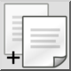

影印件與參考資料
工具列 / 圖示:

菜单:
編輯 > 影印件與參考資料
捷径:
Ctrl+Shift+C (Mac: ⇧⌘C) | R, C
命令:
copywithreference | rc
說明
將目前選區複製到 QCAD 剪貼簿。此工具讓您指定一個參考點，用於在將選區貼上到圖紙時定位選區。
使用方式
使用選擇工具準備要複製到剪貼簿的實體選區。
啟動帶參考點複製工具。
指定要在貼上選區時使用的參考點。